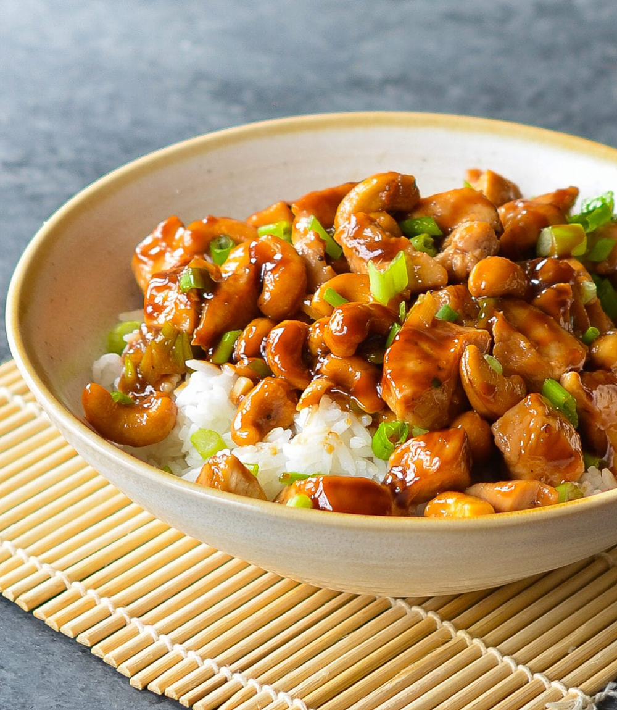

Cashew Chicken

Description
Ingredients
- 1 cup cashews
- 1.5 lbs boneless skinless chicken breast
- 8 green onions
- 2 tablespoons oil
- 1 tablespoon garlic
- 4 tablespoons hoisin sauce
- 2 tablespoons rice vinegar
- 1 tablespoon soy sauce
- 1 tablespoon fish sauce
- 0.5 teaspoons toasted sesame oil
Steps
- Preheat oven to 300F. Place cashes on a baking sheet in a single
layer. Toast in oven until fragrant: about 15 minutes!
-
Trim any fat from chicken and cut into bite-sized pieces
- Slice green onions in half(white vs green) and separate. Cut into
one inch pieces, but keep the whites separates from the greens
- Heat half of the oil in a wok or large saute pan over high heat.
When oil is almost at its smoke point, add half of the chicken. Stir
only to prevent burning and cook until golden brown. Transfer to a
place. Add remaining oil and once oil is hot, add remaining chicken
along with the white sections of the green onion. Allow to brown while
occasionally stirring. During last minute or so, add the garlic.
Once this half of the chicken has browned, add first batch black
to the wok and reduce heat to medium
- Add rice vinegar, stir, and cook until evaporated. Add hoisin, soy,
and fish sauces. Stir well and allow to cook until all chicken pieces
are fully cooked through. Should be no more than a minute
- Turn off heat and stir in roasted cashew pieces, remaining green
onions, and toasted sesame oil